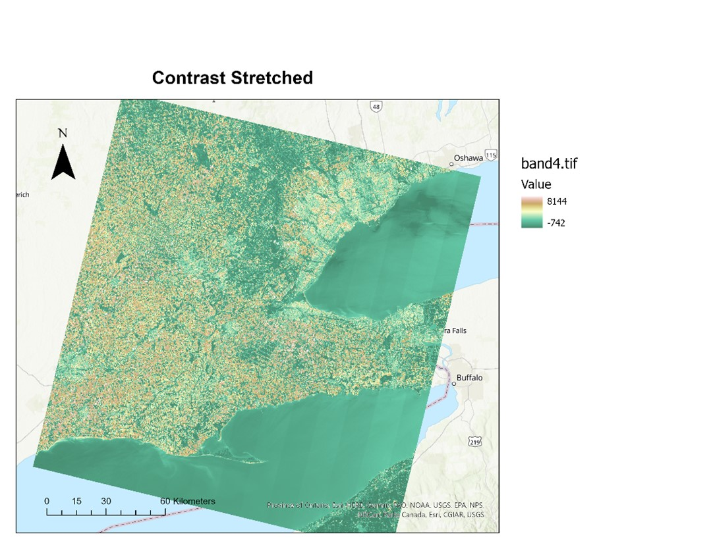
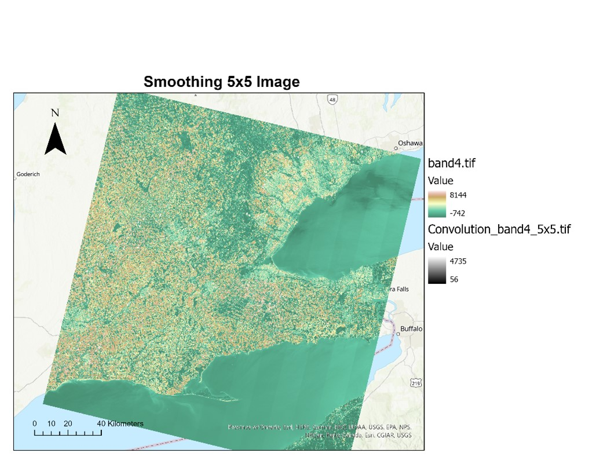
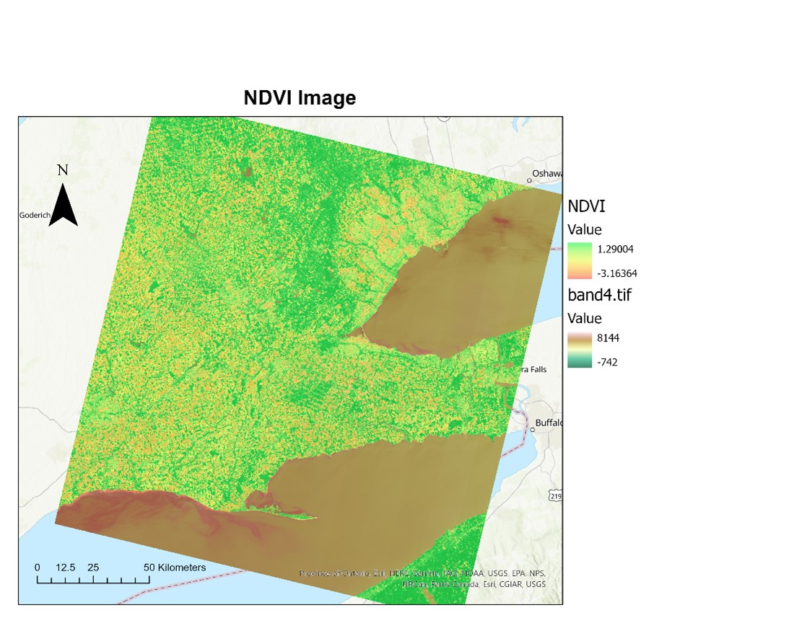
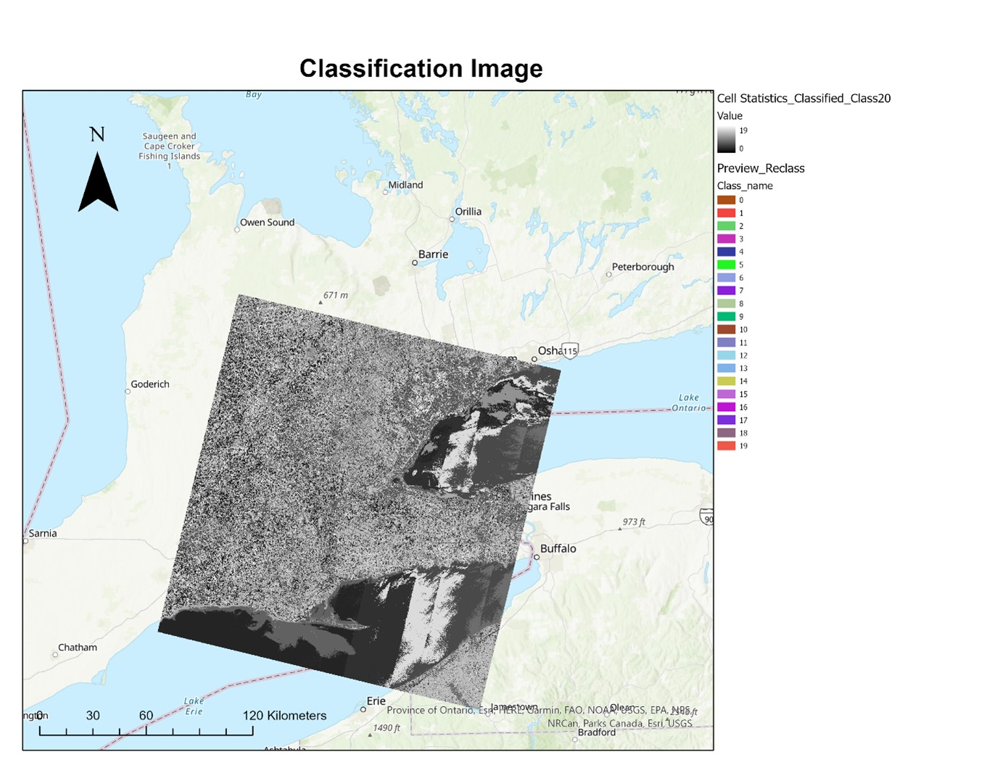
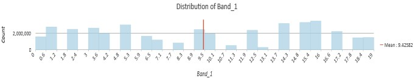

Image Enhancement - Data Manipulation
Contrast Stretching
Contrast stretching spreads the pixel value of a raster dataset along a histogram from the minimum and maximum value defined by their bit depth. A remotely sensed image may contain a narrow range of values for a multispectral band because of the low spectral resolution that occurs due to a limited number of bands.
Image Filtering
Image filtering works to eliminate unnecessary data and enhance features otherwise not clear in the data. Filters create output values by a moving, overlapping 3x3 cell neighborhood window that scans the input raster. As it passes over each input cell the filter calculates the output value using the value of each cell and its 8 immediate neighbors.
Image Calculator
As the NDVI layer was bright, I set the layer transparency to 50% to get a clearer representation of the vegetation. From the image we can see that there are relatively low amounts of vegetation visible at the time the image was acquired. The range (maximum/minimum) of values found in the NDVI image is 2. The index was not complete and required modifications. The values were also -3 and 1 rather than -1 and 1.
Unsupervised Classification 
| Classes | Land Cover |
|---|---|
| Class 0 | Land on the left side of the raster |
| Class 1 | Land spreading from west to east |
| Class 2 | Parts of Lake Erie and Lake Ontario |
| Class 3 | Parts of Lake Erie and Lake Ontario |
| Class 4 | Sections scattered within the raster |
| Class 5 | Parts of Lake Erie and Lake Ontario |
| Class 6 | The north eastern section of the raster |
| Class 7 | Southern part of the raster, extending out to Lake Erie |
| Class 8 | Eastern border of the raster |
| Class 9 | Extends to the southern border of the raster |
| Class 10 | Extends downward from the nouthern border of the raster |
| Class 11 | A part of Lake Ontario |
| Class 12 | Land on the left side of the raster |
| Class 13-17 | The land cover minus the lakes |
| Class 18-19 | Land on the right side of the raster not reaching Lake Ontario |
-
